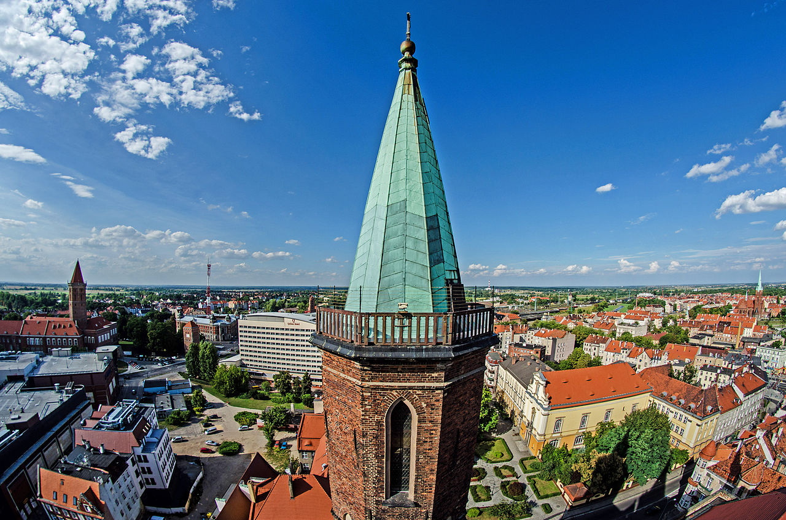
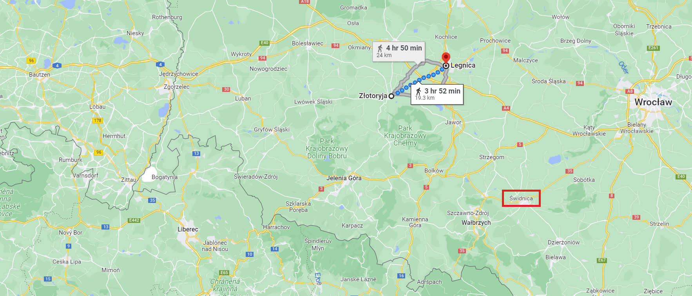
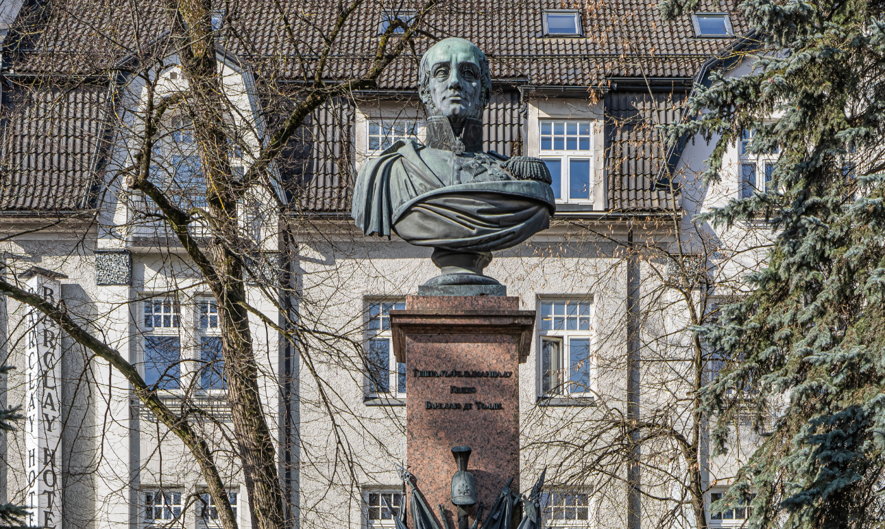
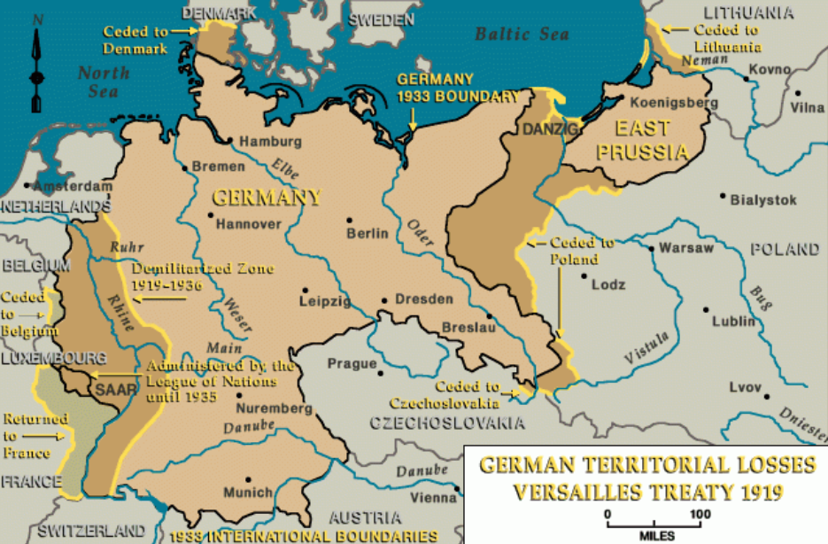
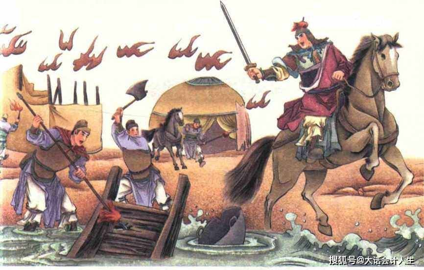

산으로 가려는 프로이센군, 강으로 가려는 러시아군
게시: 2023-06-19T06:30:40+09:00
알렉산드르가 아무리 생각해봐도 바클레이의 현 상황 진단과 향후에 대한 계획이 옳으니 바클레이를 총사령관으로 임명하긴 했지만, 바클레이의 생각대로 모든 것을 진행할 경우 당장 문제가 생겼습니다. 이미 언급한 대로, 프로이센군은 절대 자국 영토인 슐레지엔을 버리고 러시아군을 따라 오데르 강을 건너 폴란드로 도망치는 일을 하지는 않을 것이었습니다. 아무리 프로이센군이 연합군 전체 전력의 1/3 이하라고 해도, 러시아는 프로이센 없이 나폴레옹과 싸울 수는 없었습니다. 그래서 알렉산드르는 또 다시 못된 버릇을 바클레이에게도 시전했습니다. 바클레이의 의도는 브레슬라우로 직행하여 거기서 오데르 강을 건넌다는 것이었으나, 알렉산드르는 그의 팔을 비틀어 무조건 일단 슈바이트니츠로 가도록 강요한 것입니다. 바클레이는 비로소 비트겐슈타인의 처지에 공감할 수 있었습니다. 그는 어차피 결국 브레슬라우로 갈 터인데 알렉산드르 때문에 불필요하게 시간과 체력을 낭비하며 슈바이트니츠 쪽으로 우회해야 한다는 사실에 분통이 터졌지만 어쩔 수 없었습니다. 이제는 보직이 한 단계 강등되어 연합군의 좌익을 맡게된 비트겐슈타인은 러시아군을 이끌고 일단 5월 26일 골트베르크(Goldberg, 폴란드어로는 즈워토리아 Złotoryja)로 간 뒤 휴식했고, 블뤼허의 프로이센군을 포함한 연합군 우익은 남동쪽으로 선회하기 위해 리그니츠(Liegnitz, 폴란드어로는 레그니차 Legnica)를 향해 강행군해야 했습니다.

(현대의 리그니츠, 즉 레그니차의 전경입니다. 예쁜 2층짜리 건물들보다 배경에 보이는 저 평원과 맑은 공기가 정말 부럽네요.)

(연합군의 좌익이라고 해서 북쪽 끝을 생각하시면 안됩니다. 여기서 좌익이라고 하는 것은 적군을 향했을 때의 이야기니까, 비록 동쪽으로 후퇴하고는 있더라도 여전히 남쪽 끝이 좌익입니다. 결국 바클레이도 알렉산드르의 등쌀에 밀려 이렇게 좌익은 골트베르크, 우익은 리그니차에 두고 남동쪽의 슈비트니츠를 향해 선회해야 했습니다.) 바클레이가 브레슬라우로 직행하지 못하게 된 것은 당장 문제를 일으켰습니다. 러시아군은 물론 프로이센군도 계속 후방에서 병력과 물자를 보충받고 있었고, 이들은 당연히 브레슬라우를 거쳐 오고 있었습니다. 그런데 야우어에서 연합군이 선회하여 남쪽을 향하자, 이를 미처 전달받지 못한 보충병과 보급품 행렬 중 적지 않은 수가 브레슬라우로부터 별 생각없이'서쪽으로 가다보면 아군을 만나겠지'라며 서진하다 프랑스군 전위대와 마주쳐 어이없이 사로잡혔습니다. 영국 대사 스튜어트에 따르면 리그니츠로 향하던 8백명의 보충병과 10문의 대포, 많은 수의 짐마차가 프랑스군의 손에 떨어졌습니다. 이후 부랴부랴 연합군의 새로운 행선지가 통보되기는 했으나, 이들은 새로운 교통로를 찾아 남쪽으로 크게 우회해야 했으므로 큰 어려움을 겪어야 했습니다.

(에스토니아 제2의 도시인 타투(Tartu)에 있는 바클레이 드 톨리(Michael Andreas Barclay de Tolly)의 흉상입니다. 바클레이는 이름이 영국스러운데, 이유는 원래 스코틀랜드 집안이 독일에 정착했다가 나중에 에스토니아로 이주한 가문 출신이기 때문입니다. 지난 1812년 러시아 원정 편에서 자세히 다루었지만 바클레이는 러시아 귀족들 사이에서도 완전히 '독일인' 취급을 받으며 배척을 당했기 때문에 믿을 만한 사람이라고는 같은 독일계 귀족들뿐이었고, 그래서 더더욱 그의 사령부는 거의 모조리 독일계 귀족으로 채워져 다들 독일어로 이야기했습니다. 그래서 프랑스어를 쓰는 러시아계 장군들로부터는 '외국인들'이라며 더더욱 배척을 당했습니다. 다른 모든 면에서는 용감하고 근면하며 철두철미한 사람으로 인정을 받았으나 이렇게 인사 측면에서 주변 러시아인들로부터는 불신을 받았는데, 특히 그의 부인이 인사에 개입하는 것으로 더욱 욕을 먹었습니다. 같은 독일계인 그나이제나우조차도 바클레이는 그의 부관 중 하나인 부인에게 완전히 조종을 당한다고 평가했습니다.) 이렇게 상황 속에서도 연합군에게 보충병들과 보급품은 꾸준히 들어왔습니다. 아직도 연합군에게 항복하지 않은 오데르 강변의 요새 글로가우(Glogau)를 포위하고 있던 병력들이 포위를 일부 풀고 합류하기도 했고 폴란드에 점령군으로 주둔하던 부대가 오기도 했으며, 러시아와 슐레지엔에서 추가 징병한 병력도 꾸준히 도착했습니다. 그래서 연합군은 6월 1일까지는 4만의 보충 병력을 받게 되어 있었고 6월 중순에는 러시아에서 추가로 2만2천의 병력이 더 오도록 되어 있었습니다. 이 정도의 병력이 추가되면 이제 나폴레옹의 그랑다르메와 맞먹을 정도가 되지 않을까 싶었지만, 바클레이의 입장은 확고했습니다. 나폴레옹의 그랑다르메도 꾸준히 추가 병력을 받고 있으므로 여전히 연합군의 병력이 열세라는 것이었습니다. 그리고 무엇보다 러시아군 주력이 휴식과 재편성, 재보급을 필요로 한다는 사실에는 변함이 없었습니다. 독일계 바클레이가 총사령관이 되었다는 소식은 프로이센군에게 전혀 반가운 소식이 아니었습니다. 어차피 이때 즈음해서는 그 누가 총사령관이 되었다고 하더라도 싫어할 정도로 프로이센군과 러시아군은 사이가 좋지 않았습니다만, 바클레이는 1812년부터 후퇴가 주특기인 지휘관으로 악명이 높았기 때문이었습니다. 지금 당장은 알렉산드르가 프로이센의 눈치를 보느라 남동쪽으로 향하고 있다지만, 바클레이가 총사령관인 이상 언제 다시 방향을 바꾸어 오데르 강을 건너려 할지 몰랐습니다. 이렇게 바클레이가 고집불통으로 후퇴를 주장하고 있었으므로, 프로이센측에서는 바클레이에게서 더 이상 오데르 강을 넘어 후퇴하겠는다는 소리가 나오지 못하도록 하려고 전전긍긍했습니다. 프리드리히 빌헬름은 직접 자신의 부관 뮈플링(Müffling)을 아예 바클레이의 사령부에 배속시켜 바클레이의 비위를 맞추며 감시와 설득을 계속했습니다.

(이 지도는 1919년 WW1 이후 독일의 영토 상실을 보여주는 것입니다만, 독일의 주요 강들의 모습과 거기에 어느 도시들이 접하고 있는지 잘 보여주고 있어서 여기에 올렸습니다. 보시다시피 오데르 강의 상류쪽에 슐레지엔의 주도이자 1813년 당시 프로이센군의 근거지라고 할 수 있던 브레슬라우와 그에 딸린 다리가 있기 때문에, 연합군은 원래 여기서 오데르를 건널 생각이었습니다.) 하지만 바클레이가 슈바이트니츠에서 프로이센군과 함께 파부침주(破釜沈舟)의 각오로 싸우려면 무엇보다 오스트리아의 참전 선언이 절실했습니다. 그런데 처음에는 5월 24일에 나폴레옹에게 선전포고하겠다던 오스트리아는 슬그머니 6월 1일로 날짜를 미루더니, 이젠 6월 10일로 다시 연기한 상황이었습니다. 그러니까 적어도 오스트리아가 참전할 때까지인 약 3~4주 동안은 어떻게든 시간을 끌어야 했는데, 프로이센 측에게는 그를 위한 비장의 준비물이 있었습니다. 그건 과연 무엇이었을까요?

(파부침주(破釜沈舟)란 항우가 진나라와 싸우러 나갈 때 강을 건넌 뒤 배를 부수고 솥도 깨버리게 한 뒤, 병사들에게 3일치의 식량을 나누어주며 돌아갈 배도 없고 밥을 지을 솥도 없으니 살아남을 길은 적을 무찌르는 것 뿐이라고 사기를 고취시킨 것에서 유래된 말입니다.) Source : The Life of Napoleon Bonaparte, by William Milligan Sloane Napoleon and the Struggle for Germany, by Leggiere, Michael V https://www.plantours-partner.de/auf-der-oder-bis-nach-breslau.html https://en.wikipedia.org/wiki/Z%C5%82otoryja https://en.wikipedia.org/wiki/Legnica https://en.wikipedia.org/wiki/Michael_Andreas_Barclay_de_Tolly